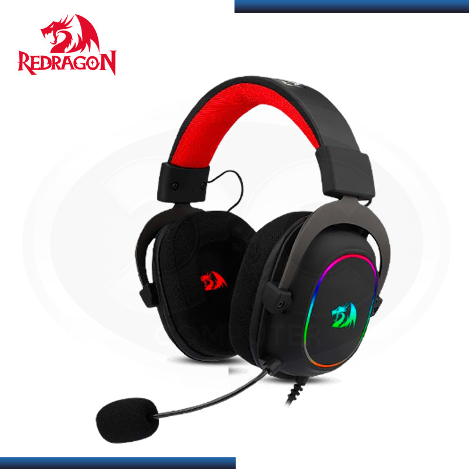
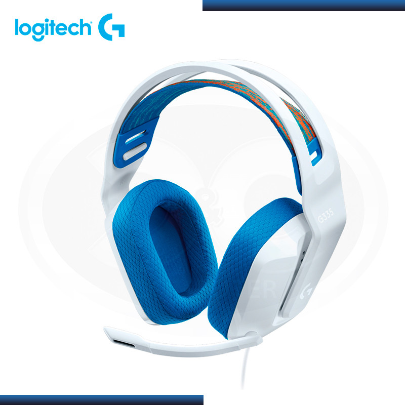
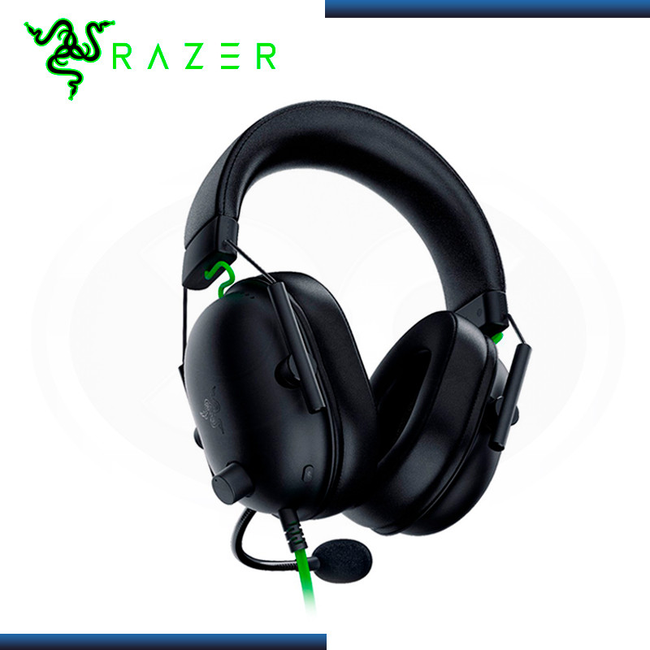

Audifonos Gamer
Listado de marcas en stock:
Productos a la venta
Audifono redragon zeus x h510 rgb con microfono black

Precio: S/ 234,98
- Respuesta: 50 - 20k Hz.
- Impedancia: 2.2k Ohm.
- Diafragma: 53 mm con imanes de neodimio
- Material: Metálica, ajustable, integrada a la estructura.
Audifono logitech g g335 white con microfono

Precio: S/ 215,05
- Frecuencia: 20 Hz-20 KHz
- Transductor: 40 mm
- Sensibilidad: 87,5 dB SPL/Mw
- Impedancia: 36 Ohms
Audifono razer blackshark v2 x usb black edition

Precio: S/ 230,01
- Conexión: Usb tipo A
- Frecuencia: 20 Hz - 20 kHz
- Sensibilidad: -42 dB V / Pa,1 kHz.
- Sonido: Envolvente 7.1